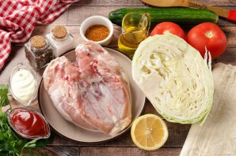
Подготовьте все ингредиенты по списку. Для шаурмы можно взять любую часть курицы. У меня грудка. Соус можете взять любой на свой вкус и в том количестве, в котором вы любите.
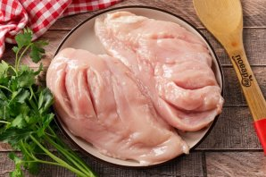
Грудку срежьте с кости, если не используете готовое филе, промойте, обсушите и сделайте несколько глубоких надрезов ножом, чтобы она лучше промариновалась.
Полейте мясо соком лимона, посыпьте солью и специями на свой вкус.
Тщательно натрите со всех сторон и оставьте мариноваться на 15-20 минут.
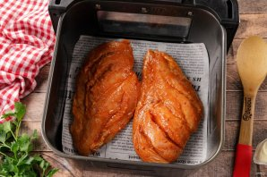
Решётку аэрогриля застелите пергаментом, выложите маринованное куриное филе и запеките при температуре 200 градусов в течение 20-25 минут.
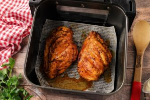
Если необходимо, за 5 минут до готовности, грудку можно перевернуть. Готовое филе переложите на тарелку и дайте немного остыть.
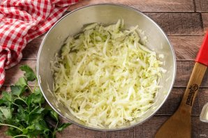
Капусту тонко нашинкуйте, добавьте немного соли и помните руками, чтобы она стала мягче.
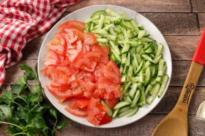
Огурец нарежьте тонкой соломкой, помидоры небольшими дольками. Если помидоры сильно сочные, то жидкость с семенами можно убрать.
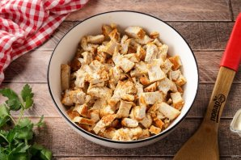
Грудку нарежьте небольшими кусочками.
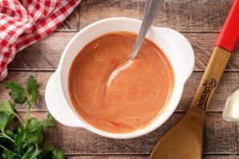
Подготовьте соус. У меня майонез и кетчуп практически в равных пропорциях.
Если у вас большой лаваш, его можно разрезать на две части. У меня обычный квадратный, одну часть которого смажьте соусом и выложите овощи.
На овощи выложите куриное филе. Начинку берите в том количестве, в котором больше любите. Кому-то нравится побольше мяса, а кому-то соуса или овощей. Если любите с луком, можно добавить нарезанную луковицу, добавить тёртый сыр, болгарский перец и т.д.
Полейте начинку сверху любимым соусом, по желанию добавьте свежую зелень.
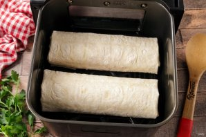
Сверните лаваш, подвернув края, в плотный рулет. Аналогично сформируйте остальную шаурму. Из указанного количества ингредиентов получается 4-5 штук, в зависимости от желаемых размеров и объёма начинки. В чашу аэрогриля у меня помещается за раз две шаурмы.
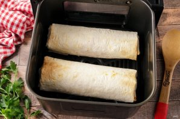
Уложите шаурму швом вниз и запеките при температуре 200 градусов в течение 5 минут.
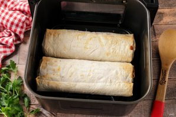
Если необходимо подрумянить вторую сторону, аккуратно переверните и готовьте ещё пару минут.
Шаурма в аэрогриле готова.
Подавайте шаурму сразу, пока она горячая, а лаваш хрустящий.
Приятного аппетита!